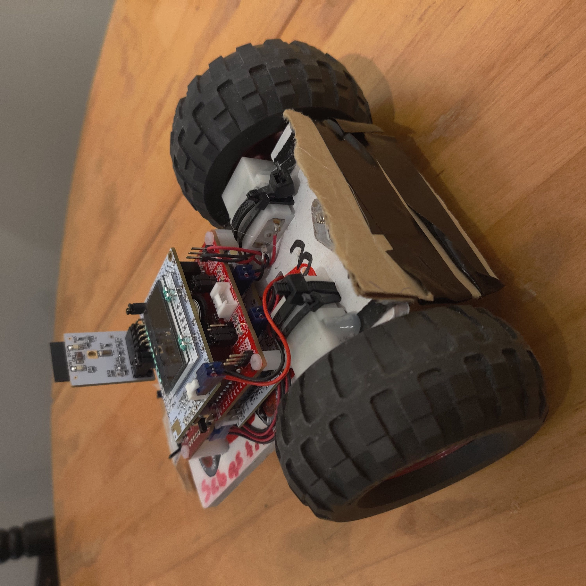

Projects / MSP430 Autonomous Car
Background
The MSP430 was used as the development kit for the autonomous car that I made for my embedded systems class at NC State (ECE 306). This car was also able to connect to the internet via an ESP32 and controllable with either a phone app or desktop client.
Process
Pictured here is the MSP430 and the PCBs that were provided to us as a part of our class. There was a power display board that housed all the circuitry for the VRMs as well as the LCD. The other PCB was the FET board which housed all the MOSFETS which allowed forward and reverse of both motors individually using GPIO outputs from the MSP430.
Throughout the class we were tasked with setting up ADC conversions, a DAC, serial communication (input and output), Timers, interrupts, PWM for wheel speed control and display of the LCD. All of this was written in C using software called IAR as our IDE. This code was written and tested procedurally over the course of the semester. Included to the right is a photo of the finished car.
Our cars were tested in a final “Demo Day” where we first had to drive our car around a course using our wireless devices. After reaching a certain point we were then tasked with sending one more command upon which our cars would enter autonomous mode. Our cars had to follow the path shown in the image to the left and then intercept the black line, turn so it is tangent and then follow the black line with an algorithm we wrote ourselves.
Throughout this project we were put into teams of eight and were tasked with doing a formal writeup of all processes, logic, testing, and planning that was done as a part of this project. This was a format writeup that was done over the course of the semester and was over 100 pages. This document can be provided upon request.Code was provided as a starting point for this class but most of the code was written by me and is available upon request as well as the writeup discussed above.